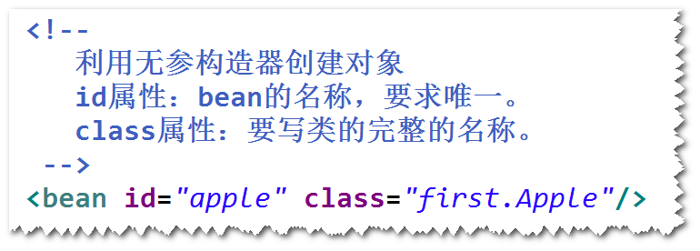
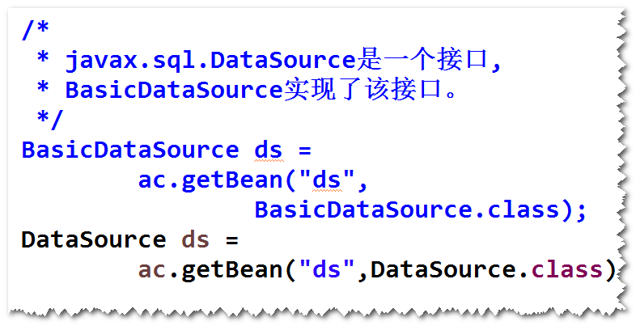

开源的，用来简化企业级应用开发的应用开发框架。
注：
简化开发: spring对常用的一些api（比如jdbc）做了封装，
这样，代码会大大简化，而且代码质量也会提高（比如，使用
spring jdbc访问数据库，就不用考虑获取连接与关闭连接）。
解耦: spring可以帮我们管理对象（帮我们创建对象并且管理
对象之间依赖关系)。这样一来，软件更容易维护。
集成: spring可以集成其它的一些框架（比如，集成任务调度的
框架Quartz等等）。
是Spring框架中的一个核心模块，用来管理对象。
注：
管理对象：指的是创建对象、初始化、销毁以及管理对象之间
的依赖关系。
step1. 导包。
spring-webmvc
step2. 添加Spring配置文件。
step3. 启动容器。
方式一 无参构造器
step1. 为类添加无参构造器（或者缺省构造器）。
step2. 在配置文件当中，添加bean元素。

step3. 启动容器，调用容器提供的getBean方法。

方式二 静态工厂方法 (了解)
方式三 实例工厂方法（了解）
附: <bean
id = "apple" id属性:bean的名称,要求唯一 .
class = "first.Apple" class属性: 要写类的完整的名称.(包名.类名)
factory-bean="cal" factory-bean属性:指定一个bean的id. 容器会调用该bean的实例方法来创建对象.
factory-method="getInstance" factory-method属性:指定一个实例方法或静态方法.(实例工厂方法/静态工厂方法)
init-method= "init" ; 初始化方法
destroy-method="destroy" 销毁方法
scope="prototype" scope属性:指定作用域. 缺省值是singleton(单例),如果值是prototype,则会创建多个实例
lazy-init = "true" lazy-init属性:如果值为true,表示延迟加载.
/>
set方法注入 .
<property property 元素 :表示set方法注入
name = "b" name属性:指定调用哪一个方法,容器会将属性名的第一个字母大写,然后在前面添加set,这儿,会调用"setB"方法
ref = "b1" ref属性:指定被注入的bean的id.
/>
构造器方法注入:
<constructor-arg constructor-arg元素 :表示采用构造器注入.
index = "0" index属性:构造器参数的下标(从0开始).
ref = "foo"
/>

a.默认情况下，对于一个bean元素，容器只会创建一个实例。
b.如果将作用域设置为"prototype"，则每调用一次getBean方法，
都会创建一个新的实例。
注：
如果将作用域设置为"prototype"，则销毁方法不起作用。
a.默认情况下，容器启动之后，会将所用作用域为"singleton"的bean
先实例化。
b.容器启动之后，对于作用域为"singleton"的bean不再实例化，
直到调用了getBean方法才会创建。

对象之间的依赖关系由容器来建立。
容器调用set方法或者构造器来建立对象之间的依赖关系。
注：
IOC是目标，DI是手段。

step1.添加相应的set方法。
step2.在配置文件当中，使用<property>元素进行配置。

step1. 添加相应的构造器。
step2.在配置文件当中，使用<constructor-arg>元素进行配置。

a.什么是自动装配
容器依据某种规则，自动建立对象之间的依赖关系。
注：
容器仍然需要调用set方法或者构造器。
容器默认不会自动装配。
b.如何自动装配
可以设置autowire属性值：
byName
byType
constructor

List Set Map Properties
方式一 使用list,set,map和props注入。
方式二 以引用的方式来注入。

a.作用：用于访问其它bean的属性。
b.用法:
练习： 配置一个连接池并测试。
提示： step1. 导包 ojdbc,dbcp
step2. 添加config.properties文件 添加到resource文件夹。
step3. 在spring配置文件中，添加相关配置

step4.测试连接池

容器启动之后，会扫描指定的包及其子包下面的所有的类，
如果该类前面有一些特定的注解（比如@Component）,则容器会
将该类纳入容器进行管理（相当于在配置文件里面有一个bean）。
注意：该bean默认的id是首字母小写之后的类名。
step1. 在类前面添加一些特定的注解，比如 @Component。

step2. 在配置文件当中，配置组件扫描。


是一种软件架构模式，核心思想是将一个软件划分成
模型、视图和控制器三种不同类型的模块，其中，模型负责
封装业务逻辑的处理，视图负责提供界面（包括数据展现和
用户操作界面），控制器负责协调模型和视图（视图将请求先
发送给控制器，由控制器选择对应的模型来处理；模型将处理
结果交给控制器，由控制器选择对应的视图来展现数据）。

1)方便测试
比如，直接将业务逻辑写在servlet里面，需要部署才能测试，
而写在java类里面，可以直接测试（不用部署）。
2)方便维护
修改视图不影响模型，反过来，修改模型也不影响视图。
3)方便分工协作
用来简化基于MVC架构的web应用程序开发的框架。
注：SpringMVC是Spring框架的一部分。
1)DispatcherServlet 前端控制器
2)HandlerMapping 映射处理器
3)Controller 处理器
4)ModelAndView 用于封装处理结果
5)ViewResolver 视图解析器
step1.导包
spring-webmvc
step2.添加spring配置文件
step3.配置DispatcherServlet

step4.Controller类

step5.jsp
step6.配置HandlerMapping和ViewResolver


练习： http://ip:port/spring-day03-3/toBmi.do 返回计算bmi指数页面。
练习： 修改员工管理模块，将所有jsp文件转移到/WEB-INF/下。
step1.导包。
spring-webmvc
step2.添加配置文件
step3.配置DispatcherServlet
step4.Controller类

step5.jsp
step6.配置文件当中，添加
组件扫描，mvc注解扫描，视图解析器。


return "redirect:toIndex.do"
RedirectView rv =
new RedirectView("toIndex.do");
ModelAndView mav =
new ModelAndView(rv);
表示层 (UI层): 数据展现和操作界面，另外还要负责请求分发。
业务层（服务层）: 封装业务处理逻辑
持久层（数据访问层）: 封装数据访问逻辑
注意:
a.上一层调用接口调用下一层的服务（比如，业务层要调用接口
调用持久层） ，这样做的好处是，当下一层的实现发生改变，不影响
上一层。
b.表示层调用业务层，业务层调用持久层。


解决方式：
配置SpringMVC提供的过滤器(CharacterEncodingFilter)。
注意:
a.表单提交方式必须设置为"POST"。
b.过滤器所使用的编码与客户端的要一致。
DispatcherServlet在收到请求之后，如果有拦截器，会先调用
拦截器，再调用处理器(Controller)。
注：
过滤器属于Servlet规范，而拦截器属于Spring框架。

step1. 写一个java类，实现HandlerInterceptor接口。
step2. 在拦截器接口方法当中，实现拦截处理逻辑。
step3. 配置拦截器。

step1. 在配置文件当中，配置SimpleMappingExceptionResolver

step2. 添加相应的异常处理页面。
注：
简单异常处理器只适合对异常进行一些简单的处理，如果要对
异常做比较复杂的处理（比如记录日志），则需要使用方式二。
step1. 在处理器类里面，添加一个异常处理方法。
step2. 添加相应的异常处理页面。
Spring对jdbc的简单封装。
step1. 导包
spring-webmvc,spring-jdbc,ojdbc,dbcp,junit

step2. 添加spring配置文件
step3. 配置JdbcTemplate
step4. 调用JdbcTemplate提供的方法来访问数据库 注： 通常将JdbcTemplate注入到DAO。